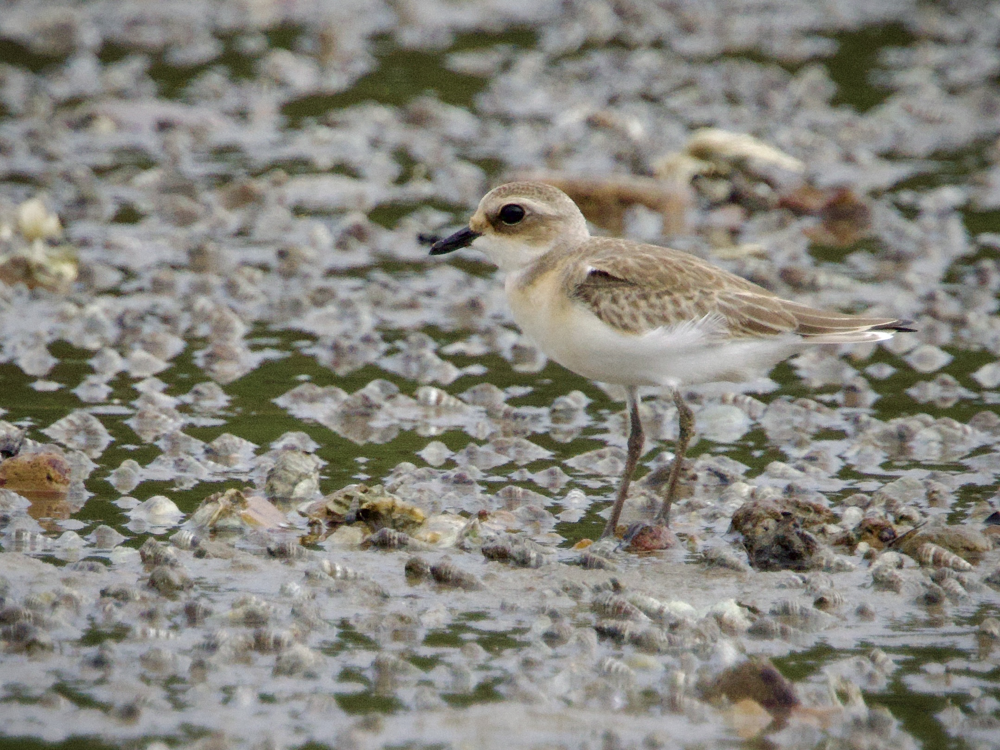
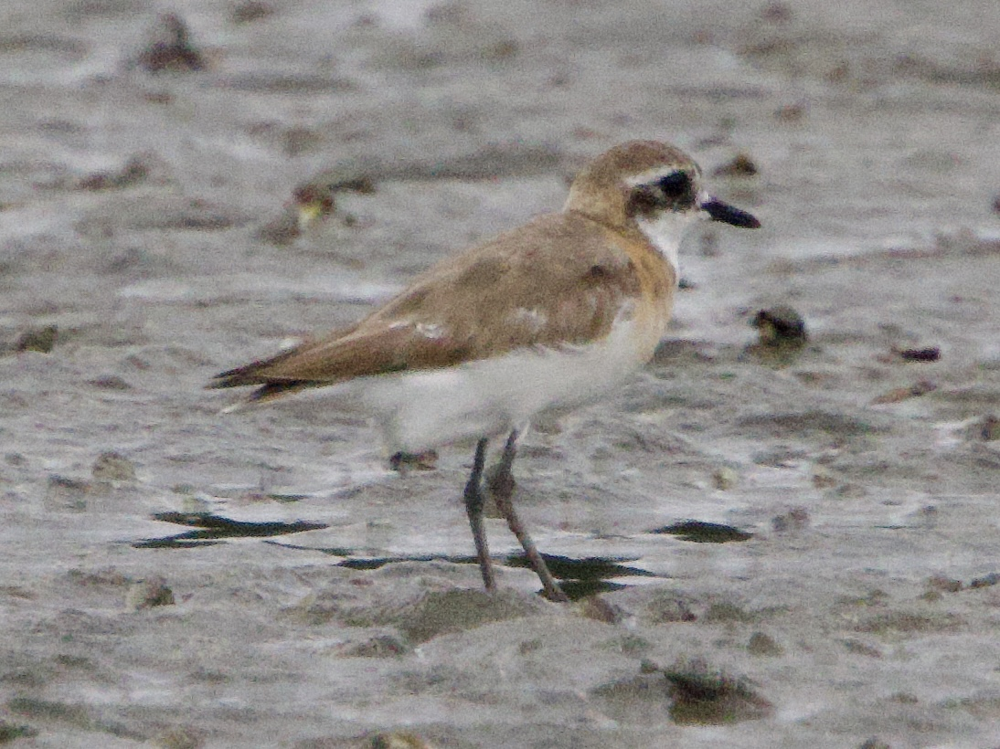
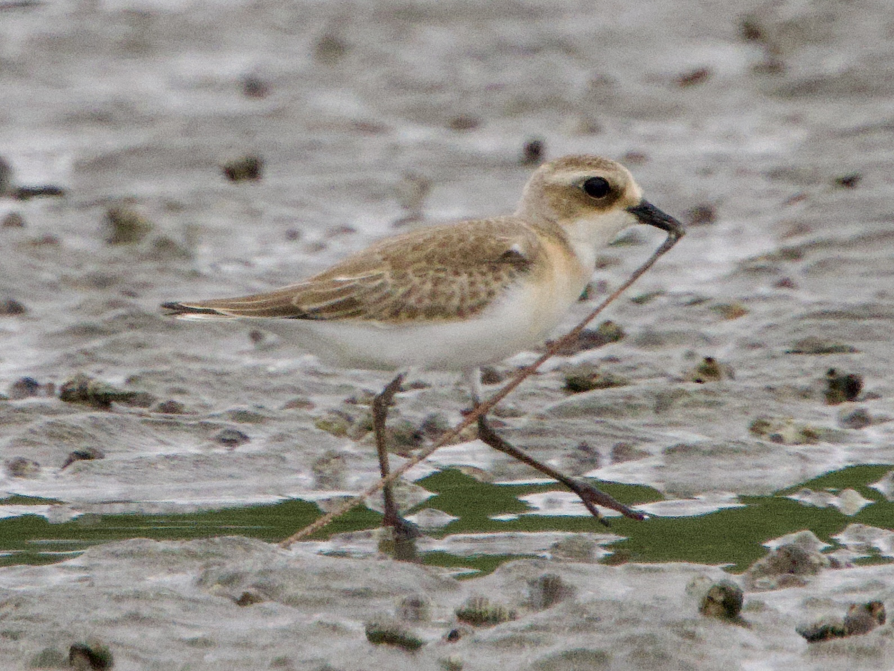
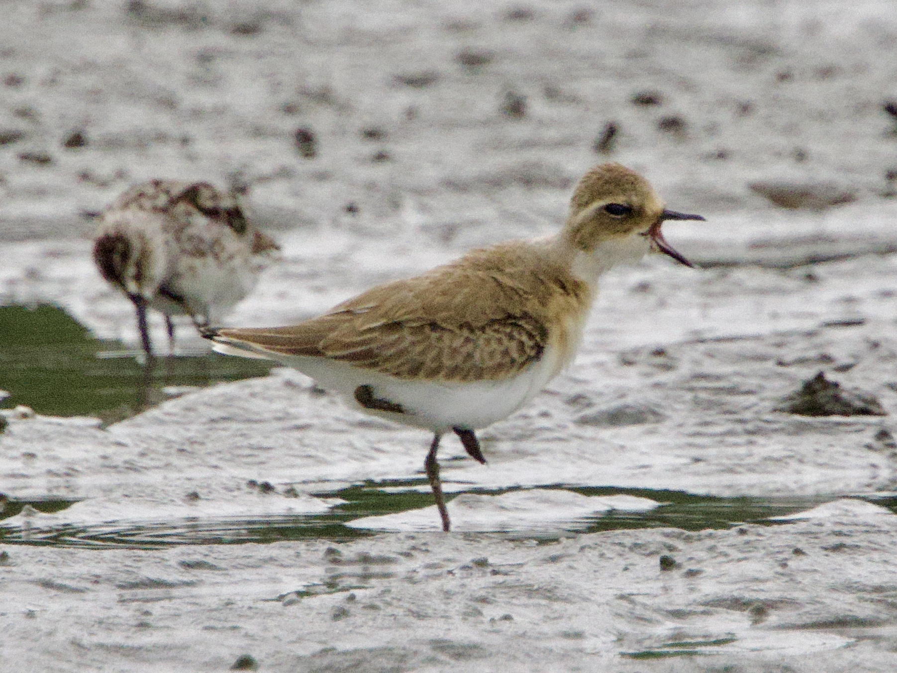

Tibetan Sand Plover
Anarhynchus atrifrons
Order: Charadriiformes
Family: Charadriidae

A rather warm-toned sand plover. Has a shorter bill than Greater Sand Plover, and darker legs. In non-breeding plumage, has brown upperparts and white underparts.

This one shows more of a trace of the breeding plumage, with a black mask and orangey neck. Honestly, I'm not sure how to talk about this species without juxtaposing it with the other Sand Plovers. Still getting second thoughts when I try to do an ID.

Likes worms and invertebrates.

And of course, they also yawn like we all do.